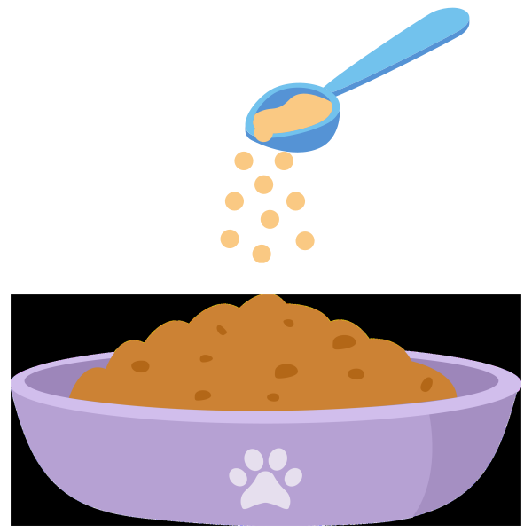

Hydration Booster
Nutritious Hydration Treat for Cats
A tasty 3-in-1 powder treat that helps keep your cat refreshed and nourished. Whisk it up into a creamy paste, a light broth, or freeze into cooling bites — a delicious way to boost hydration while adding gentle nutrition every day.

Why choose  ?
?
No Fillers
We never pad out our formulas with sugars or cheap bulking agents. Every scoop is made of only beneficial, active ingredients and real flavouring.
Cat-Only
Unlike generic blends made for dogs too, Cloud9 is developed exclusively for cats. Every ingredient is chosen with feline health in mind.
Charity Support
Together, we can make a difference. A portion of every Cloud9 sale is donated to UK cat charities, helping to fund food, shelter, and care for cats in need. Read More

Cloud9 Success Story
“Since starting Cloud9 Stress & Anxiety formula, Luna is much less stressed around visitors - it's made a huge difference to his confidence”
— Sarah, LondonShare your cat’s story! Leave us a review and get featured on our site and Instagram.
Inside Every Scoop
Nutritious proteins, natural fibres, and gentle nutrients blend into a tasty broth-style treat that helps keep your cat refreshed and well hydrated.
Chicken Broth Powder 144 mg
HydrationA savoury broth base that encourages cats to lap up more fluids.
- Promotes hydration through irresistible flavour
- Helps refresh and comfort picky drinkers
Goat Milk Powder 502 mg
HydrationA gentle, nutritious base rich in electrolytes and protein.
- Supports fluid balance and everyday hydration
- Provides a creamy, tasty consistency cats love
Chicken Heart Powder 215 mg
WellnessRich in taurine and amino acids to support vitality.
- Helps maintain everyday wellbeing
- Adds natural nutrition to each serving
Egg Powder 215 mg
WellnessA complete protein source with essential amino acids.
- Supports skin, coat, and overall vitality
- Contributes to a creamy, satisfying texture
Pumpkin Powder 144 mg
WellnessNatural fibre that aids gentle digestion.
- Helps maintain stool regularity
- Supports tummy comfort with every serving
Betaine & Glycine 97 mg
WellnessFunctional nutrients that support hydration and balance.
- Help cells stay hydrated and resilient
- Provide gentle support for overall wellbeing
Sunflower Lecithin 82 mg
WellnessNatural source of phospholipids for skin and coat health.
- Supports nutrient absorption and digestion
- Contributes to overall coat shine and condition
Chicken Liver Powder
PalatabilityA nutrient-rich protein cats find irresistible.
- Makes the broth or paste highly appealing
- Encourages daily enjoyment for hydration
Feeding Guide
Find the right amount for your cat’s size and lifestyle.
Serving Size
Small Cats (under 4kg)
1 scoop per dayLarge Cats (over 4kg)
2 scoops per day
One pouch = 75 scoops (75g). Mix daily with your cat’s usual food.
Tip: Give an extra ½ scoop 2 hours before stressful events such as fireworks or travel.
How to Feed
Sprinkle the scoop onto wet food and mix well.
We use real ingredients for real flavouring, so our mixes are generally well accepted by cats
but for especially picky eaters, stir into a yoghurt-style treat, or mix with our Hydration Booster for a tasty paste.
Start small — gradually build up to a full serving if your cat is cautious.
For best results, pair our Stress & Anxiety Powder with positive training techniques. Build your cat’s confidence, reduce anxiety triggers, and support their well-being.
Read the Training GuideWhy not also check out...
Stress & Anxiety

Joints & Mobility

Probiotic Gut Health

Skin & Coat

Catnip Mouse

Character Wand

Catnip Rabbit

Steel Lickmat
We love to hear from you
Want 10% off your first order and exclusive offers and updates?
Join the Cloud9 Club for exclusive promotions, case study updates & feline tips.